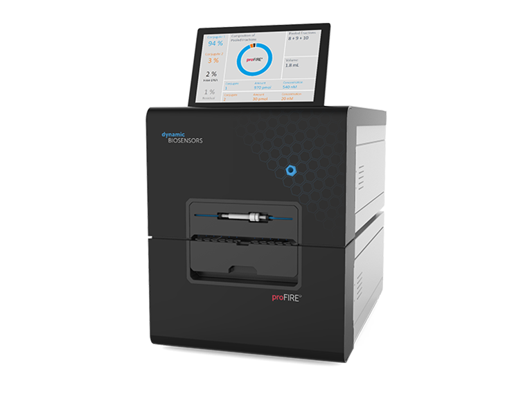
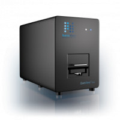
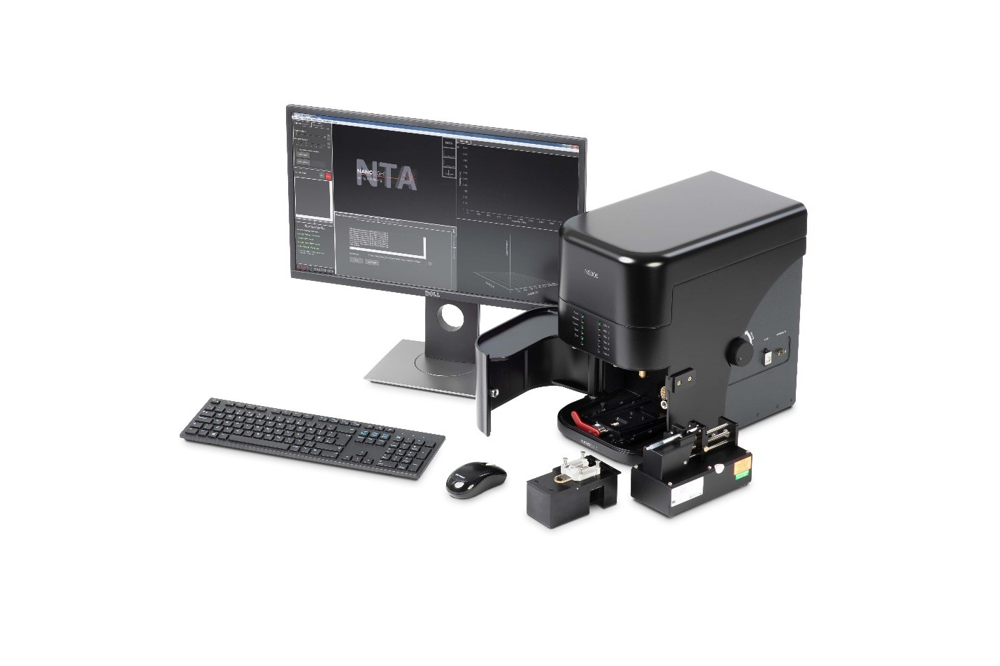
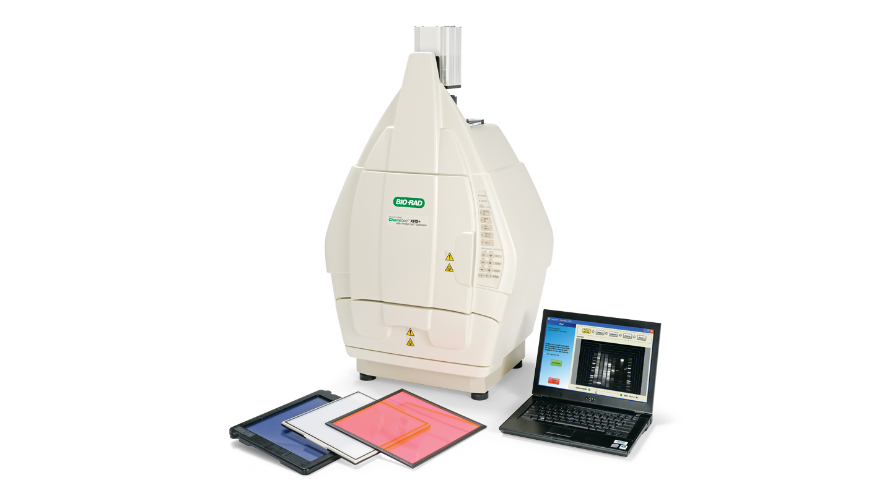
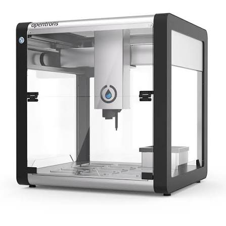
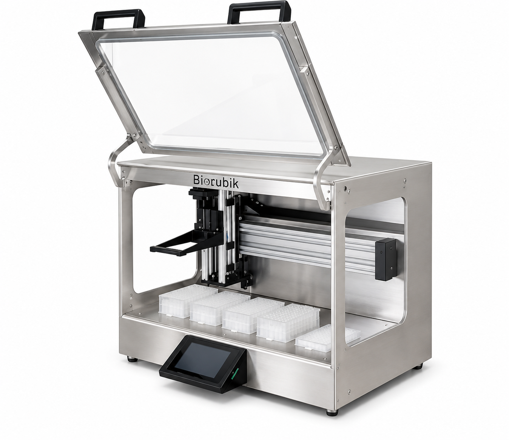

Resources
Equipment
Our laboratory is equipped with a range of advanced instruments that support ongoing research activities and are available for internal projects as well as scientific collaborations.
 sciFLEXARRAYER S12
sciFLEXARRAYER S12
Scienion
Automated non-contact microarray spotter for ultra-low volume liquid dispensing (picoliter to nanoliter range), enabling highly reproducible deposition of biomolecules on microarrays, biosensors, microfluidic devices and diagnostic platforms. Designed for medium-throughput assay development and pilot-scale production.
InnoScan Fluorescence Scanner
Innopsys
 High-resolution laser fluorescence scanner for the quantitative analysis of microarrays, biochips and fluorescently labeled samples. The system provides sensitive multi-channel detection and high-quality image acquisition for genomic, proteomic and biosensor applications.
High-resolution laser fluorescence scanner for the quantitative analysis of microarrays, biochips and fluorescently labeled samples. The system provides sensitive multi-channel detection and high-quality image acquisition for genomic, proteomic and biosensor applications.

Profire®
dynamic biosensors
Automated purification platform for protein–oligonucleotide conjugates and other bioconjugates, enabling efficient removal of unconjugated components, buffer exchange and recovery of highly pure products. The system is also routinely used for the purification of oligonucleotides functionalized with custom linkers and reactive groups.
Exoview® r100
unchained labs


NanoSight NS300
Malvern Panalytical
A nanoparticle characterization platform based on Nanoparticle Tracking Analysis (NTA). It enables the measurement of particle size distribution, concentration, and aggregation state in liquid samples by tracking the Brownian motion of individual particles. The system is widely used for the analysis of extracellular vesicles, viruses, protein aggregates, liposomes, and nanoparticles, providing high-resolution characterization for biomedical, pharmaceutical, and nanotechnology applications.
chemidoc xrs+
BIO-RAD


OT-2
Opentrons
A flexible automated liquid handling workstation designed to streamline laboratory workflows and improve experimental reproducibility. The platform performs precise pipetting, sample preparation, serial dilutions, PCR setup, library preparation, and other routine laboratory protocols through customizable and open-source automation. Its modular design and user-programmable interface make it a powerful tool for increasing throughput and reducing hands-on time in research, biotechnology, and diagnostic laboratories.
Nucleocube
biocubik

- © AMSLab
- Design: HTML5 UP